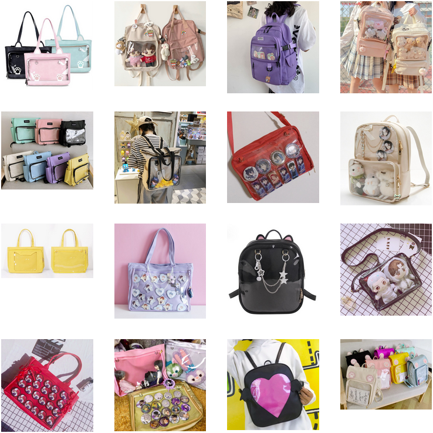

AliExpress: Base Bags
While we do not recommend getting merch for your bag from AliExpress, you can get some accessories and quality bases though. Shipping can take a while, but it’s affordable.
Many of these bags can be found on Taobao, but with proxy fees and shipping, it factors out to be about the same, especially if you aren’t fluent in Chinese or working with a proxy.
Synthetic flowers, ribbons, trim, and fabric are cheap on AliExpress. You can also find great accessories like charm findings and protective equipment.

You can view our collection of items from bases to badge protectors for inspiration!